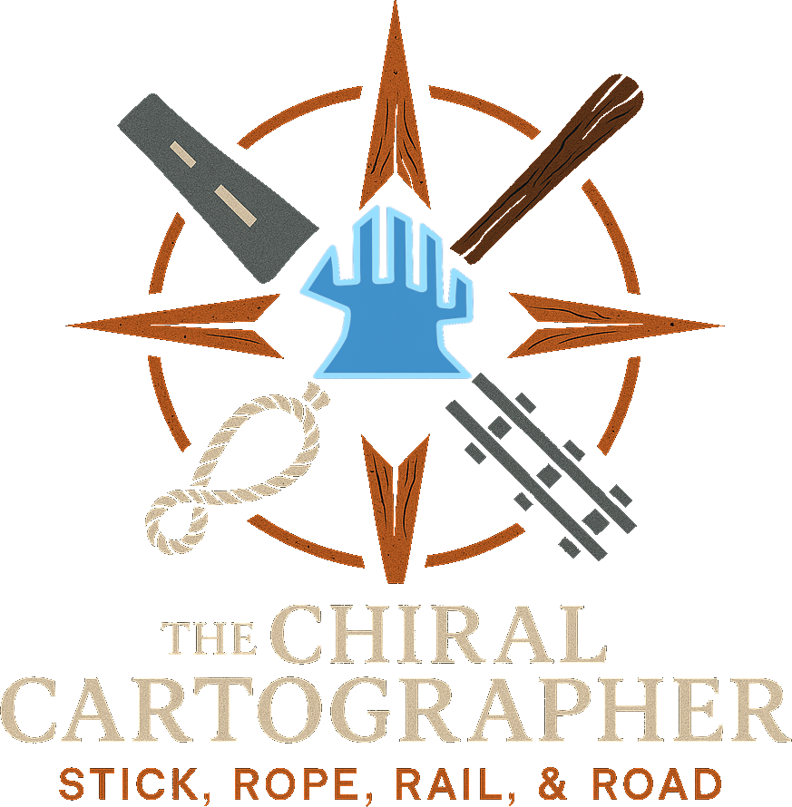

The Chiral Cartographer
Stick, Rope, Rail, & Road
Forge your paths, plan your runs, and connect the world — one strand at a time.
Plan structures!
Tally resources!
Pickups & mines!
Best‑yield routing!
Community-built!
Press & hold ~2s to activate
A Porter’s companion for Death Stranding 2!
Current Features:
- • Add road segments, monorail lines, and other structures, then track required resources
- • Mark unlocked preppers/outposts; track connection levels and available materials
- • Track restored mines with yield upgrades
- • Generate a master shopping list for required materials
- • ... And more!
Fan project. Not affiliated with Kojima Productions, Sony Interactive Entertainment, or Playstation.
